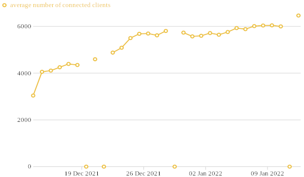

Via @gus, OONI reports in a limited number of ASes in Russia show Tor blocking (blocking of all directory authorities and default obfs4 bridges) since 2021-12-01. This is unusual—the measurements from the days before do not show signs of Tor blocking.
https://explorer.ooni.org/search?until=2021-12-03&since=2021-11-29&probe_cc=RU&test_name=tor
Here are all the ASes in the past 2 days that show anomalous measurements: 0/15 Tor Browser Bridges, 0/10 Tor Directory Authorities. (Select “Status: Anomalies” in the OONI Explorer to see.)
| AS | ISP | sample anomaly report |
|---|---|---|
| 8359 | MTS | 2021-12-01 18:37:52 |
| 12389 | Rostelecom | 2021-12-02 09:28:31 |
| 12714 | NetByNet | 2021-12-01 15:35:13 |
| 12958 | Tele2 | 2021-12-01 11:22:59 |
| 15582 | Akado-Stolitsa | 2021-12-01 23:59:15 |
| 16345 | Beeline | 2021-12-01 23:35:33 |
| 25159 | MegaFon | 2021-12-01 23:30:01 |
Here is a sampling of ASes (not all of them) that had normal measurements: 13/15 Tor Browser Bridges, 10/10 Tor Directory Authorities.
Note that AS 12389 of Rostelecom is in the above blocked list, but that AS and other ASes of Rostelecom are also in the below unblocked list. Also note that AS 16345 is in both lists—there was one normal measurement for this AS, but about 30 blocked ones.
| AS | ISP | sample normal report |
|---|---|---|
| 12389 | Rostelecom | 2021-12-02 22:56:07 |
| 12668 | KomTehCentr | 2021-12-02 23:17:03 |
| 16345 | Beeline | 2021-12-02 22:09:15 |
| 21479 | Rostelecom | 2021-12-02 23:09:26 |
| 24955 | Ufanet | 2021-12-02 21:06:08 |
| 25513 | Moscow city telephone network | 2021-12-02 23:12:55 |
| 41275 | Lovitel | 2021-12-02 21:49:40 |
| 42610 | Rostelecom | 2021-12-02 22:09:45 |
| 51570 | ER-Telecom | 2021-12-02 23:53:20 |
I can confirm. Right now on cellular Tele2 Saint Petersburg SIM (as12958) Tor does not connect.
Tele2 Saint Petersburg SIM (as12958). Tor does not connect in any mode.
All tests were performed using Tor Browser 11.0.1.
- Regular (unobfuscated) connection: no response to TCP SYN from multiple IPv4s.
- obfs4 connection: no response to TCP SYN from multiple IPv4s.
- snowflake: the connection never establishes in full and breaks after several kilobytes transferred.
- meek-asure: no response to TCP SYN on default Meek fronting domain
ajax.aspnetcdn.com:443(yes, really, also tested with curl. Domain resolves to152.199.19.160.). - obfs4 bridges requested from Tor Browser: no successful connection with
176.170.168.5, 213.135.244.242, 82.65.171.173. This is the only bridge set which Torproject returned, I’ve tried to request multiple times and also disconnected and connected again to the cellular network to change my IP.
What worked:
- obfs4 bridges requested from bridges.torproject.org: the connection establishes successfully!
- obfs4 bridges requested via email: the connection establishes successfully!
- My own obfs4 bridge in Russia: the connection establishes successfully!
All pcaps and logs are in the archive: torblock-russia-03.Dec.2021-Tele2-SPb.7z (161.2 KB)
https://ping-admin.ru/free_test/result/16385298065b24wzs59ggs887m5v63g.html

Cellular MTS Moscow (AS8359) does not block Tor. Tele2 AS15378 (another AS) does not block Tor.
At least in a single case ajax.aspnetcdn.com is blocked with DPI.
Direct HTTP/HTTPS connections to its 40.118.185.161 and 152.199.19.160 addresses generally work fine, according to ping-admin points.
https://ajax.aspnetcdn.com test — Южно-Сахалинск point can’t establish the connection to the same IP, while the previous tests were fine.
The situation is changing over time: Free site availability checks all over the world: Ping-Admin.Com - web site and server monitoring. Site availability checks

Ripe Atlas 500 Russian probes SSL check result:

Globalcheck.net test result. I’m not confident in it — it reports that ajax.aspnetcdn.com is not accessible from cellular Beeline, MTS, MegaFon, Yota (all Moscow), and accessible only from Rostelecom.
However, I’ve performed tests to other known-working hostnames and it lists them as accessible. Strange.
Looks like the block affects generally Moscow users.
I am scared( It will not stoppng
What can I do to save the freedom? I am a simple man. I am even cannot programming.
VPN services are not usefull for me, as I think. I want to separate the traffic.
Добрый день. У меня на корпоративном тарифе в Ростелекоме ещё с лета стал пропадал доступ к входным нодам тора. Выглядело это так: в промежутке между 11 часами утра по московскому времени и до 13 часов 1-2 раза на 15-40 минут могли быть недоступны адреса входных узлов. Netcat не мог установить соединение и ping не проходил. С любыми другими адресами, в том числе и с соседствующими с недоступными, соединения устанавливались. Проверять все входные ноды я не пробовал, однако по логу тора в этот промежуток времени не было ни одного успешного соедиения. Затем все адреса снова становились доступны. Такое могло происходить каждый день, а могло и неделями не случаться.
From the RIPE Atlas measurement, I see 16 failed probes in Moscow and 1 failed probe in Saint Petersburg:
There are 466 other probes that got the correct result, including many others in Moscow and Saint Petersburg:
@ValdikSS только что протестировал на домру и теле2 Волгоград. На домру все работает идеально, ни одной проблемы. Через теле2 не отвечает вообще НИ ОДИН мост тора.
На теле2 стоит ТСПУ, так что есть предположение, что дело именно в нём и блокируют централизованно, но пока просто тестируют, как это было во время выборов с DoH.
My guess is that Snowflake blocking is being done by fingerprinting and blocking DTLS Server Hello. In 03.Dec.2021.tele2-snowflake.pcapng, we see that HTTPS communication with the Snowflake broker is successful, as are the STUN negotiations with proxies. Then there are several exchanges of:
client -> Client Hello
Hello Verify Request <- proxy
client -> Client Hello
client -> Client Hello
client -> Client Hello
client -> Client Hello
client -> Client Hello
client -> Client Hello
client -> Client Hello
client -> Client Hello
client -> Client Hello
with different proxy IP addresses. It is as if the Server Hello is never reaching the client. Then, there is an exchange in the opposite direction, where a proxy tries to send a Client Hello to the Snowflake client. In this case, the Snowflake client sends multiple Server Hello, but the proxy does not respond to them:
Client Hello <- proxy
client -> Hello Verify Request
client -> Hello Verify Request
Client Hello <- proxy
client -> Server Hello
client -> Server Hello
client -> Server Hello
client -> Server Hello
client -> Server Hello
client -> Server Hello
client -> Server Hello
client -> Server Hello
client -> Server Hello
client -> Server Hello
The Tor Project community team has posted a guide, in Russian, that explains how to get a private obfs4 bridge.
You will have to replace the sample obfs4 1.2.3.4:1234 line with a real working bridge line that you get from Tor Browser’s “Request a bridge from torproject.org” / “Запросить мост у torproject.org” feature. You can also get a bridge line from bridges.torproject.org or by emailing bridges@torproject.org from a Gmail address.
If you need more help, you can email frontdesk@torproject.org.
A person reports that on MTS, Moscow, Tor is censored while <U+2068>ajax.aspnetcdn.com<U+2069> domain is not.
https://twitter.com/SmartSmartov/status/1467071773124530176
YOTA
Summary: All TCP traffic towards IP addresses of Tor nodes and ajax.aspnetcdn.com is blocked on router (SYN receive no reply regardless of TTL). UDP and ICMP traffic is not blocked.
traceroute --tcp --port=443 154.35.175.225
$ sudo traceroute --tcp --port=443 154.35.175.225
traceroute to 154.35.175.225 (154.35.175.225), 30 hops max, 60 byte packets
1 _gateway (192.168.14.1) 1.031 ms 2.427 ms 2.408 ms
2 * * *
3 * * *
4 * * *
5 * * *
6 * * *
7 * * *
8 * * *
9 * * *
10 * * *
11 * * *
12 * * *
13 * * *
14 * * *
15 * * *
16 * * *
17 * * *
18 * * *
19 * * *
20 * * *
…
If we tcp-ping a very close neighbor IP address 154.35.175.224, it pings.
traceroute --tcp --port=443 154.35.175.224
$ sudo traceroute --tcp --port=443 154.35.175.224
traceroute to 154.35.175.224 (154.35.175.224), 30 hops max, 60 byte packets
1 _gateway (192.168.14.1) 1.089 ms 3.542 ms 3.513 ms
2 * * *
3 * * *
4 * * *
5 * * *
6 * * *
7 * * *
8 * * *
9 * * *
10 37.29.105.81 (37.29.105.81) 74.553 ms 86.881 ms 61.471 ms
11 83.169.204.112 (83.169.204.112) 135.780 ms 115.363 ms 83.169.204.116 (83.169.204.116) 94.330 ms
12 83.169.204.70 (83.169.204.70) 86.984 ms 79.724 ms 64.736 ms
13 war-b3-link.ip.twelve99.net (195.12.255.204) 75.706 ms 83.467 ms 88.466 ms
14 hbg-bb4-link.ip.twelve99.net (62.115.118.40) 87.974 ms 100.923 ms 107.544 ms
15 ddf-b2-link.ip.twelve99.net (62.115.115.51) 72.799 ms 70.355 ms 73.094 ms
16 gtt-ic340298-ddf-b2.ip.twelve99-cust.net (62.115.169.81) 73.945 ms 74.145 ms 80.880 ms
17 ae36.cr1-chi1.ip4.gtt.net (89.149.141.165) 181.282 ms 185.423 ms 193.968 ms
…
UDP and ICMP is not blocked.
traceroute --udp --port=443 154.35.175.225
$ sudo traceroute --udp --port=443 154.35.175.225
traceroute to 154.35.175.225 (154.35.175.225), 30 hops max, 60 byte packets
1 _gateway (192.168.14.1) 0.720 ms 1.747 ms 1.724 ms
2 * * *
3 * * *
4 * * *
5 * * *
6 * * *
7 * * *
8 * * *
9 * * *
10 37.29.105.81 (37.29.105.81) 64.332 ms 88.765 ms 74.867 ms
11 83.169.204.112 (83.169.204.112) 113.846 ms 134.836 ms 83.169.204.116 (83.169.204.116) 92.758 ms
12 83.169.204.74 (83.169.204.74) 95.115 ms 83.169.204.70 (83.169.204.70) 80.697 ms 65.303 ms
13 war-b3-link.ip.twelve99.net (195.12.255.204) 72.108 ms 77.991 ms 81.949 ms
14 hbg-bb4-link.ip.twelve99.net (62.115.118.40) 88.956 ms 99.532 ms 101.905 ms
15 ddf-b2-link.ip.twelve99.net (62.115.115.51) 66.823 ms 68.714 ms 70.443 ms
16 gtt-ic340298-ddf-b2.ip.twelve99-cust.net (62.115.169.81) 74.701 ms 74.677 ms 75.864 ms
17 ae36.cr1-chi1.ip4.gtt.net (89.149.141.165) 180.778 ms 185.716 ms 164.883 ms
18 as14987.xe-3-0-0.ar1.ord6.us.as4436.gtt.net (69.31.110.70) 169.592 ms 174.838 ms 168.728 ms
…
TELE2
Exactly the same as on Yota: TCP is filtered, UDP and ICMP works.
traceroute --tcp --port=443 154.35.175.225
$ sudo traceroute --tcp --port=443 154.35.175.225
traceroute to 154.35.175.225 (154.35.175.225), 30 hops max, 60 byte packets
1 _gateway (192.168.43.209) 2.072 ms 2.077 ms 2.151 ms
2 * * *
3 10.221.3.197 (10.221.3.197) 49.470 ms 49.461 ms 49.452 ms
4 * * *
5 * * *
6 * * *
7 * * *
8 * * *
9 * * *
10 * * *
11 * * *
12 * * *
13 * * *
14 * * *
15 * * *
16 * * *
17 * * *
18 * * *
19 * * *
…
traceroute --udp 154.35.175.225
$ sudo traceroute --udp 154.35.175.225
traceroute to 154.35.175.225 (154.35.175.225), 30 hops max, 60 byte packets
1 _gateway (192.168.43.209) 2.146 ms 2.106 ms 2.987 ms
2 * * *
3 10.221.3.197 (10.221.3.197) 35.789 ms 38.249 ms 36.699 ms
4 10.221.7.113 (10.221.7.113) 33.829 ms 33.811 ms 33.799 ms
5 10.221.7.126 (10.221.7.126) 38.176 ms 38.163 ms 38.145 ms
6 10.221.66.142 (10.221.66.142) 34.101 ms 28.898 ms 28.865 ms
7 * * *
8 broadband-90-154-105-25.ip.moscow.rt.ru (90.154.105.25) 39.224 ms 39.213 ms 42.975 ms
9 87.226.133.75 (87.226.133.75) 60.395 ms 185.140.148.27 (185.140.148.27) 58.617 ms 57.688 ms
10 ae1-500.cr1-stk3.ip4.gtt.net (77.67.90.96) 79.596 ms 79.577 ms 77.837 ms
11 ae36.cr1-chi1.ip4.gtt.net (89.149.141.165) 183.412 ms 187.280 ms 178.787 ms
12 as14987.xe-3-0-0.ar1.ord6.us.as4436.gtt.net (69.31.110.70) 175.081 ms 161.543 ms 161.505 ms
traceroute --tcp --port=443 154.35.175.224
$ sudo traceroute --tcp --port=443 154.35.175.224
traceroute to 154.35.175.224 (154.35.175.224), 30 hops max, 60 byte packets
1 _gateway (192.168.43.209) 11.726 ms 11.792 ms 11.916 ms
2 * * *
3 10.221.2.197 (10.221.2.197) 55.413 ms 56.740 ms 56.729 ms
4 10.221.7.113 (10.221.7.113) 53.513 ms 53.502 ms 53.590 ms
5 10.221.7.122 (10.221.7.122) 54.237 ms 54.355 ms 55.188 ms
6 * * *
7 * * *
8 broadband-90-154-105-25.ip.moscow.rt.ru (90.154.105.25) 30.587 ms 29.964 ms 29.957 ms
9 185.140.148.27 (185.140.148.27) 51.525 ms 51.471 ms 50.032 ms
10 ae1-500.cr1-stk3.ip4.gtt.net (77.67.90.96) 75.430 ms 64.510 ms 70.755 ms
11 ae36.cr1-chi1.ip4.gtt.net (89.149.141.165) 169.236 ms 160.956 ms 169.096 ms
…
You’re right. Here’s the new dump.
06.Dec.2021.tele2-snowflake.7z (179.8 KB)
Does WebRTC work in browser?
If it still work in browser, then the fingerprint being recognized is the pion WebRTC library, not WebRTC as a whole. It would be possible to evade this blocking by using a browser to forward the traffic.
I wonder, are other uses of browser DTLS being filtered? For example, is a file transfer between two browsers using https://instant.io/ blocked? (Uses WebTorrent, which is WebRTC.)
I would guess that they would want to fingerprint the DTLS implementation, because that’s a known weakness in Snowflake currently. But as it appears that Client Hello is transmitted successfully, whether sent by a browser or by the custom snowflake-client software, it may be that all DTLS Server Hello is blocked.
Beeline Moscow
OONI Tor test: Tor censorship test result in Russia
aspnetcdn: ajax.aspnetcdn.com showed signs of TCP/IP blocking in Russia
MTS Moscow — no blocks.
OONI Tor test: Tor censorship test result in Russia
aspnetcdn: ajax.aspnetcdn.com was accessible in Russia
Yes, WebRTC in browser seem to work.
It works. I’m not familiar with WebRTC, but I guess that’s fingerprint blocking.
instantio-test2.7z (661.3 KB)
Yes! Thanks~ This means the things being blocked is pion’s Go implementation of WebRTC, not WebRTC as a whole.
Posted some analysis of the DTLS fingerprint differences between instantio-test2.7z and 06.Dec.2021.tele2-snowflake.7z:
There are many differences, but the three differences in the Snowflake client/server fingerprint that seem most salient to me are:
- Client Hello containing a server_name (SNI) extension with an ASCII IP address. (EDIT: Being addressed in https://github.com/pion/dtls/issues/406.)
- Server sending a Hello Verify Request message. (Was also noted by MacMillan et al.)
- Lack of application_layer_protocol_negotiation (ALPN) extension in Client Hello (and hence in Server Hello).
@Shelikhoo, @tango, if you want to test the block and circumvention techniques yourself, I can provide you access to Tele2, Beeline and Yota links. Just ask.
Do I understand it right that if I enable the switch on https://snowflake.torproject.org/ page or install the extension in the browser, people will connect using my browser (and hence default WebRTC implementation which won’t be blocked) eventually?
I can ask people to do that.
It depends—possibly not. The issue is that the client side of the connection does not use a browser, but a specialized program called snowflake-client, which uses pion/webrtc, an independent WebRTC implementation. pion/webrtc ultimately depends on pion/dtls, which is what is being fingerprinted.
There’s a further complication, which is that there are two implementations of the WebRTC proxy side: the web version that runs in a page or as a browser extension, and a standalone command-line version. The web version uses browser WebRTC and therefore probably has a good fingerprint, but the standalone version uses the same pion/webrtc package. So two configurations occur in practice, pion–browser and pion–pion, and it’s conceivable that one of the configurations works while the other does not.
You can find recent Snowflake metrics at Sources – Tor Metrics (and archived ones at Sources – Tor Metrics). They show the counts of each type of proxy over 24 hours. I think there are currently sufficiently many web proxies (snowflake-ips-badge + snowflake-ips-webext). The area where we have more difficulty is getting proxies with compatible NATs—client-restricted-denied-count counts how many times a client requested a proxy but could not be served because there was no proxy available with a compatible NAT. I think most of those clients eventually get service, it just takes longer.
@type snowflake-stats 1.0
snowflake-stats-end 2021-12-06 20:26:47 (86400 s)
snowflake-ips US=3884,DE=1470,RU=1082,FR=691,GB=522,JP=479,CA=384,BR=355,NL=344,...
snowflake-ips-total 13963
snowflake-ips-standalone 3865
snowflake-ips-badge 69
snowflake-ips-webext 10029
snowflake-idle-count 3126880
client-denied-count 84104
client-restricted-denied-count 84104
client-unrestricted-denied-count 0
client-snowflake-match-count 281448
snowflake-ips-nat-restricted 8017
snowflake-ips-nat-unrestricted 210
snowflake-ips-nat-unknown 5697
*.www.torproject.org has just been added to the Registry of Blocked Websites, using an old court decision from 2017.
gitlab.torproject.org works.
Working mirror from EFF: https://tor.eff.org
For me not only torproject.org and www.torproject.org are blocked, but also *.torproject.org, including gitlab.torproject.org. ISP: Domru, Krasnoyarsk.
Tested with my mobile ISP (Megafon, Krasnoyarsk), gitlab.torproject.org and SNI-spoofed gitlob.torproject.org with the same IP is fine.
Thanks for the testing environment provided by @ValdikSS.
The test results show using a web-based snowflake proxy server is not sufficient for evading censorship. This result correlated with the observation that ServerHello message send by snowflake-client is dropped.
The packet capture can be obtained here:
packet.7z (4.5 KB)
Looks like there is no torproject.org in the list, only www.torproject.org and it’s subdomains like sub.www.torproject.org. But it’s ips are banned, so it will not be accessible.
Strange, in my case - only www.torproject.org isn’t working.
Tried to modify Snowflake (pion webrtc library) fingerprint.
- I tried to change ciphersuites and its order, as well as signatures and its order — did not help, no connection.
- Snowflake certificate does include KU, EKU, BC and SKI extensions, while Firefox has none.
snowflake-tests-moddedversion.7z (223.7 KB)
- Tried to remove extensions, x509 library in golang seems not to allow that completely, there’s still empty (0-byte) extension field added.
Did not help, no connection.
Also, certificate serial ID in snowflake is much lengthy than a Firefox has.
snowflake-test3-emptyextensions.7z (186.5 KB)
All right, finally managed to circumvent Snowflake censorship.
Russian DPI check supported_groups extension in ServerHello payload (byte 0x5a in udp packet).
It looks for DTLS packet header “magic” “16 FE FD” and then looks for “1D 00 17 00 18” at 0x5a offset.
Here’s the minimal UDP payload which triggers the filtering:
russian-filtered-serverhello.bin.7z (193 Bytes)
Just remove any one of 3 groups here: https://github.com/pion/dtls/blob/v2.0.8/flight4handler.go#L194
Recompiled snowflake (windows, linux) with modification:
snowflake-russian-censorship-circumvention-08.12.2021.7z (3.5 MB)
However, the filtering is bi-directional, that’s why ServerHello from unmodified standalone servers is still being filtered. However, Tor successfully connects over Snowflake with browser servers.
PCAP: snowflake-changedsupportedgroups_circumvention.7z (283.9 KB)
It is worth noting that in the browser version of WebRTC connection, there is no supported_groups extension as shown in the instant_io packet capture.
Look’s like subdomains also isn’t available.
Yesterday it was *.www.torproject.org in the blacklist, now it’s *.torproject.org
So yeah, subdomains now should be also blocked everywhere. Tested gitlab.torproject.org on my mobile ISP, now it’s blocked, while it wasn’t yesterday.
The relays, bridges, ajax.aspnetcdn.com and Snowflake block has been lifted. Tor browser connects just fine without any circumvention (tested on Beeline and Tele2).
The website is now blocked by the official Registry record.
Today the blocking returned, now it affect more ISPs.
Here’s the block on MGTS, Moscow: Tor censorship test result in Russia
There’s also Psiphon censorship, according to OONI Probe.
Beeline: Psiphon was NOT reachable in Russia
MGTS: Psiphon was NOT reachable in Russia
Psiphon:
Domru, Krasnoyarsk - unreachable: Psiphon was NOT reachable in Russia
Megafon, Krasnoyarsk - unreachable: Psiphon was NOT reachable in Russia
ping-admin results of Tor relay IP addresses which have HTTP server on port 80:
97.70.74.194 Бесплатная проверка доступности сайта из различных частей мира: Ping-Admin.Ru — мониторинг сайтов и серверов. Проверка работы сайта
104.238.167.111 Бесплатная проверка доступности сайта из различных частей мира: Ping-Admin.Ru — мониторинг сайтов и серверов. Проверка работы сайта
135.125.55.228 Бесплатная проверка доступности сайта из различных частей мира: Ping-Admin.Ru — мониторинг сайтов и серверов. Проверка работы сайта
162.243.72.198 Бесплатная проверка доступности сайта из различных частей мира: Ping-Admin.Ru — мониторинг сайтов и серверов. Проверка работы сайта
@libneko checked Psiphon app just now on my ISPs
I agree there is block
On Domru Volgograd (No tspu) all works
On Tele2 Volgograd Moscow IP (Tspu) don’t work, or connects after 5 minutes minimum
@ValdikSS can’t take dumps now, sorry, but seems its related to tspu, so could u check?
I’ve scanned several Tor relay IP addresses which are hosted in Russia and have 80 port opened.
They are not reachable from the ISP with Tor block (Tele2/Yota/Beeline).
$ whois 95.165.148.12
…
% Information related to '95.165.0.0/16AS25513'
route: 95.165.0.0/16
descr: Moscow Local Telephone Network (OAO MGTS)
descr: Moscow, Russia
origin: AS25513
mnt-by: MGTS-USPD-MNT
created: 2009-01-27T13:52:05Z
last-modified: 2009-01-27T13:52:05Z
source: RIPE
Regular link:
$ curl 95.165.148.12
<html>
<head><title>301 Moved Permanently</title></head>
<body>
<center><h1>301 Moved Permanently</h1></center>
<hr><center>openresty/1.19.3.2</center>
</body>
</html>
Beeline:
# curl 95.165.148.12 --connect-timeout 5 -v
* Trying 95.165.148.12:80...
* Connection timed out after 5000 milliseconds
* Closing connection 0
curl: (28) Connection timed out after 5000 milliseconds
Another example:
$ whois 62.113.113.56
…
role: Hosting technology LTD
address: 1-st Frezernaya str. 2/1 korp. 2
admin-c: SK10337-RIPE
tech-c: SK10337-RIPE
abuse-mailbox: abuse@vdsina.ru
nic-hdl: HTL31-RIPE
mnt-by: ru-vdsina-1-mnt
created: 2018-02-19T16:32:26Z
last-modified: 2018-02-19T16:32:26Z
source: RIPE # Filtered
Beeline:
# curl 62.113.113.56 --connect-timeout 5 -v
* Trying 62.113.113.56:80...
* Connection timed out after 5001 milliseconds
* Closing connection 0
curl: (28) Connection timed out after 5001 milliseconds
There’s definitely filtering involved.
For some reason, Psiphon on Domru is now fine, while TOR on Megafon is even more degraded:
Now: Tor censorship test result in Russia
Was: Tor censorship test result in Russia


The filtering towards IP addresses of Tor relays is in effect in Moscow, Tomsk (Zelenaya Tochka TOMSK LLC), Penza (ER-Telecom), Perm (ER-Telecom), Medvedevo (ER-Telecom), Khabarovsk (Transtelecom), Kemerovo (Regional Information Technologies Ltd.), UFA (JSC Ufanet), Ulyanovsk (MTS), Kazan (two unnamed ISP), Novosibirsk (Sibirskie Seti, Truenetwork), Armavir (CityTelekom), Chita (Chitatehenergy), Omsk (RusHost), Voronezh (Transtelecom), Volzhskiy.
Latest RIPE Atlas measurements (sort by “majority” and watch for timeouts)
Is the block on ajax.aspnetcdn.com still present? In the OONI web connectivity test, I see anomalies between 2021-12-01 and 2021-12-08, but the most recent anomaly is 2021-12-08 13:07, and there are many “accessible” measurements since then.
Yes, it is still getting blocked, but only on some ISP. Not accessible in Moscow from Beeline, Tele2, Yota, but people report from other cities that ajax.aspnetcdn.com works but Tor relays do not.
Patched snowflake-client builds for testing
@cohosh from the Tor anti-censorship team has made updated Snowflake packages to remove the DTLS fingerprint distinguisher found by @ValdikSS. The change is already merged into Tor Browser and will be available in the next release. But you can test the modified snowflake-client now. If any problems are discovered, there is still a short time to make changes for the next Tor Browser release.
The tests require a moderate level of technical ability—you need to replace a file in the Tor Browser folder, or run a command from the command line. Less technical users, it is better to wait for the next release.
Testing with Tor Browser
Download the .tar.gz file for your platform and extract it. Open your Tor Browser directory and find the snowflake-client binary:
| platform | location |
|---|---|
| linux | TorBrowser/Tor/PluggableTransports/snowflake-client |
| osx | Contents/MacOS/Tor/PluggableTransports/snowflake-client |
| windows | TorBrowser/Tor/PluggableTransports/snowflake-client.exe |
Rename the existing binary to snowflake-client.backup, and copy the binary from the .tar.gz file into its old location.
Start Tor Browser and choose Snowflake from Tor Network Settings.
Testing from the command line
Download the .tar.gz file for your platform and extract it. Go into the directory containing the snowflake-client binary and create a file called torrc.snowflake:
SocksPort auto
UseBridges 1
Bridge snowflake 192.0.2.3:1 2B280B23E1107BB62ABFC40DDCC8824814F80A72
ClientTransportPlugin snowflake exec ./snowflake-client -log snowflake-client.log -url https://snowflake-broker.torproject.net.global.prod.fastly.net/ -front cdn.sstatic.net -ice stun:stun.l.google.com:19302,stun:stun.voip.blackberry.com:3478,stun:stun.altar.com.pl:3478,stun:stun.antisip.com:3478,stun:stun.bluesip.net:3478,stun:stun.dus.net:3478,stun:stun.epygi.com:3478,stun:stun.sonetel.com:3478,stun:stun.sonetel.net:3478,stun:stun.stunprotocol.org:3478,stun:stun.uls.co.za:3478,stun:stun.voipgate.com:3478,stun:stun.voys.nl:3478
Now run tor using that configuration file:
$ tor -f torrc.snowflake
You will know it is working as soon as you see:
new bridge descriptor 'flakey' (fresh): $2B280B23E1107BB62ABFC40DDCC8824814F80A72~flakey at 192.0.2.3
You can also try using the Tor SOCKS proxy port shown in the log:
Opened Socks listener on 127.0.0.1:XXXX
For example,
$ curl --proxy socks5h://127.0.0.1:XXXX/ https://check.torproject.org/ | head
<html lang="en_US">
<head>
<meta charset="utf-8" />
<meta name="viewport" content="width=device-width, initial-scale=1.0" />
<title>
Congratulations. This browser is configured to use Tor.
If it does not work, there are logs in the file snowflake-client.log. Logs like the following are a sign of a working connection:
WebRTC: DataChannel.OnOpen
---- Handler: snowflake assigned ----
Traffic Bytes (in|out): 6806 | 134462 -- (19 OnMessages, 138 Sends)
Traffic Bytes (in|out): 1051010 | 33510 -- (854 OnMessages, 169 Sends)
WebRTC: At capacity [1/1] Retrying...
Traffic Bytes (in|out): 72898 | 10833 -- (85 OnMessages, 29 Sends)
Traffic Bytes (in|out): 3972 | 2363 -- (9 OnMessages, 7 Sends)
Tor Browser for Android with replaced snowflake: tor-browser-10.5.10-android-armv7-multi-aligned-debugSigned.apk
Psiphon capture dumps of failed connections.
psiphon-ru-tele2-09dec2021.7z (332.6 KB)
Many psiphon vpn regions work fine, but some do not. Automatic region selection connects successfully.
The Psiphon Data Engine has a region-specific search:
https://psix.ca/d/nyi8gE6Zk/regional-overview?orgId=2&var-region=RU
Public results only go back 14 days, so take a screenshot if you want to make a record. I don’t see any notable change in the graph that ends 2021-12-08.

Updates on Tor obfs4:
- Bridges newly added to BridgeDB/Moat are not yet blocked. So it’s possible that Moat will become more usable again as new bridges come online, if the censor does not renew its list.
- There’s a new Telegram bot by @meskio for distributing obfs4 bridges. To use it, send
/bridgesto @GetBridgesBot. - Tor Browser 11.0.2 was released yesterday. It contains a new default obfs4 bridge, which is not blocked yet.
Release candidate builds of Tor Browser with the patched Snowflake are available. These builds also have a new default obfs4 bridge. If no problems are discovered during testing, these builds will become release 11.5a1.
For Telegram users, there is also Telegram: Contact @tor_bridges
We need testers to check if our new default bridge is blocked in your ISP. Thanks!
Yota, Beeline, Tele2 — all blocked, as well as my test relay, which was reachable 15 hours ago.
ISP “tiera” from Saint-Petersburg with TSPU. Tor is blocked
When you say “all blocked,” are you talking about the new default bridge mentioned by @gus?
Yes. This new relay is not accessible from these ISP.
So if I am reading this thread correctly, the situation today is:
Blocked
- Tor project website
- Unobfuscated relays
- Widely publicized obfs4 bridges
Open for now
- Tor project website mirrors
- Snowflake alpha with newest patch
- Newly added obfs4 bridges
- Meek-azure ?
Last resorts
- Private obfs4 bridges
- Private pre-proxy (V2Ray or Shadowsocks)
The “last resorts” are limited to those who have the resources to set up a private server, which they could possibly share with trusted contacts.
Not all of them. I requested some public bridges and they worked
Also, i use tunelled ipv6 and its not filtered
This in torrc worked :
ClientUseIPv4 0
ClientUseIPv6 1
I don’t know whether TSPU equipped ISPs with ipv6 also block ipv6 tor entry ips
Only a few ISPs in Russia have ipv6
ER-Telecom — IPv6 bridges are working fine and all IPv4 bridges are blocked. YOTA — all blocked.
There are three main bridge distribution methods:
-
https(the Tor Project website) -
moat(inside Tor Browser) -
email(send request from Gmail or Riseup email address)
If the Tor Project website is blocked, then so is https. That leaves only moat or email.
It would be interesting to know which method censors are using to discover bridge IP addresses to block. Then volunteers setting up new bridges could use the opposite method.
I thought that BridgeDB did not give out IPv6 bridges. Has that changed? Last time I checked, it was not possible to obtain an IPv6 obfs4 bridge from BridgeDB. It was only possibly to obtain “vanilla” (i.e. unencrypted) IPv6 bridges.
Method of testing: Go to https://bridges.torproject.org/options and check the box for " Do you need IPv6 addresses?" If you also request obfs4, you get an error message, BridgeDB encountered an error. There currently aren't any bridges available... Perhaps you should try going back and choosing a different bridge type!
You mean all the built-in IPv4 bridges? Surely not all 1,500 total IPv4 bridges in BridgeDB are blocked?
Yes, you are right, currently birdgedb doesn’t distribute IPv6 bridges. We want to fix that, but it will take some time:
But Tor Browser comes with a IPv6 bult-in bridge, maybe @quantalFox means that bridge? Or you could set up your own bridge and use it’s IPv6.
Alright, here’s a new vanilla Tor bridge (IPv4 or IPv6):
5.161.66.77:55882
[2a01:4ff:f0:214d::1]:55882
obfs4 bridge:
Bridge obfs4 5.161.66.77:55441 F3EABDE3937418457B993A03F0B2BFDED55B2CB4 cert=xHA5BH3ch7U3nH7W1NEw9L0lAHs2zc3Uc0z/Od74g8eJ5+O/TEgK7dZKdmJ9FqBDZgptOQ iat-mode=0
Первый IP (185.151.242.187) - нода, созданная до блокировки Tor, летят в таймаут все подключения по TCP.
Второй IP (45.144.66.108) - нода, созданная после блокировки Tor, дропаются все подключения.
Оба IP на скрине доступны с VPN, провайдер - ДОМРУ
Right now about 12.9% of Tor nodes are reachable from ISP with TSPU DPI systems.
Nmap done: 6702 IP addresses (868 hosts up)
How I tested that:
- Extracted router IP addresses from
/var/lib/tor/cached-descriptorsfile of long-running Tor relay - Executed nmap scan from Russian filtered network:
nmap -iL input.txt -n -PS22,80,443,9001 -sn -T4(remember, TSPU blocks only TCP connectivity, that’s why we can’t rely on default nmap’s ICMP reachability test — this would be false positive). - Used some of found
ip:port fingerprintcombination as a bridge, confirmed that the connection succeeded.
This could be used to enumerate working IP addresses and publish them as bridges.
Good work. So now the list of ways to reach the Tor network goes:
Open for now
- Snowflake bridge in Tor Browser 11.5a1 release candidate
- Not-yet-blocked obfs4 bridges, hundreds added recently
- Not-yet-blocked relays used as vanilla bridges
- Meek-azure – has anyone tested this?
Last resorts
- Private obfs4 bridges
- Private pre-proxy (SS/v2ray)
meek-azure works fine. They’ve unblocked ajax.aspnetcdn.com.
Пользователи из России могут запросить мосты через механизм «запросить мост у torproject.org», встроенный в Tor Browser. По состоянию на 16 декабря мосты, получаемые через этот механизм, работают у всех провайдеров РФ.
В десктопном браузере это делается так (страница настроек):
Более подробная информация о других способах обхода блокировок Tor: Tor blocked in Russia: how to circumvent censorship - Censorship Circumvention - Tor Project Forum
Today I found that on ISP “tiera” they started to block tcp inside 6in4 tunnels making them mostly useless for any purpose. icmp and udp are not filtered.
It’s TSPU equipped ISP. Likely others are affected. ISPs without TSPU are OK.
They broke entire 6in4 tunnel technology, including 6to4 and tunnelbroker.net
NOTE. They are likely reading this. Care what you write, do not give them more ideas they can use
Still available in both:
The author or tor.encryptionin.space mirror has received roskomnadzor’s notification:
I updated my tor.encryptionin.space mirror a few days ago, and we then added it to the forum post (about getting around russian censorship), today my hosting provider got an email from ROSCOMNADZOR
Dear Sir or Madam,
we received the following notification of ROSCOMNADZOR (the Russian “The Federal Service for Supervision of Communications, Information Technology, and Mass Media”).
…
Yes, sorry for misunderstanding.
I don’t know if it is related, but TorGuard is not available for me via MTS (both wired and mobile provider). I cannot ping vast majority of the servers and any attempt to connect to them results in the infinite connection attempt.
Maybe, they thought that “Tor” in the name is the Tor as in the Tor Browser, not a short-hand for “torrent”. Who knows.
Working IP addresses stopped falling out.
Snowflake and Meek-azure don’t work.
Are there any other working methods?
obfs4 from bridges.torproject.org works fine
There have been 200 new bridges added over the last couple of weeks. Newly issued bridges retrieved from within Tor Browser (“moat”) may work.
Here are 10 working relays which could be used as bridges:
Bridge 159.69.156.131:9001 F1A800765664CA7D983897D133C825945C288745
Bridge 84.117.255.228:9001 B0DD9A8FF7D1E6B457D2AF27272841441458BB80
Bridge 37.120.182.1:12443 9235FCBDAC4A139DC1D736D76A23A9F00D2B99A3
Bridge 188.68.62.244:11443 6C0E52E5FAC27F131146666D56FC6811CEC287D0
Bridge 50.7.178.34:443 40FAE4540CF4C126B1B15C0F5E048FDBD66E2D88
Bridge 87.174.114.28:9001 B96A2DF1C23DF9169D70ADE0993BD003311F51DA
Bridge 83.97.20.80:9001 C505A4E16004512DA5A041D7DF3C29B5DCA982CD
Bridge 80.241.214.102:443 44DF1007B545B4D8057F279025EBB33CF99BE227
Bridge 80.67.172.162:443 8E6EDA78D8E3ABA88D877C3E37D6D4F0938C7B9F
Bridge 188.68.32.47:9001 6FF18BEE3EE1F341ADF132AAB22D29D209D858C4
Right now about 900 regular relays are still reachable.
Thank you very much! Through the website and through the browser, some blocked ones come across.
New type of block spotted for a selected number of Tor IP addresses.
Previously Tor bridges and relays were TCP-filtered, but ICMP and UDP worked fine. Now UDP and ICMP is getting filtered (no ping responses), as well as TCP, but this time with TCP RST reply.
212.109.198.56 is hosted in Moscow data center.
OBIT, Filtered connection
traceroute --tcp --port=443 212.109.198.56
# traceroute --tcp --port=443 212.109.198.56
traceroute to 212.109.198.56 (212.109.198.56), 30 hops max, 60 byte packets
1 _gateway (192.168.69.1) 0.501 ms 0.482 ms 0.694 ms
2 95-161-156-121.obit.ru (95.161.156.121) 1.498 ms 1.897 ms 2.304 ms
3 172.29.194.72 (172.29.194.72) 3.726 ms 3.720 ms 3.918 ms
4 172.29.192.121 (172.29.192.121) 2.278 ms 2.680 ms 2.878 ms
5 172.29.194.77 (172.29.194.77) 2.457 ms 2.450 ms 2.649 ms
6 172.29.194.102 (172.29.194.102) 2.436 ms 1.635 ms 1.606 ms
7 172.29.255.217 (172.29.255.217) 1.801 ms 1.082 ms 1.215 ms
8 172.29.194.121 (172.29.194.121) 1.616 ms 1.815 ms 1.807 ms
9 172.29.194.37 (172.29.194.37) 1.800 ms 1.794 ms 1.788 ms
10 vi-xx-0150.brc2.spb.obit.ru (85.114.1.13) 2.409 ms 2.614 ms 2.607 ms
11 gw2-msk.global-ix.ru (109.239.137.252) 12.210 ms 13.357 ms 13.342 ms
12 mail-ru.gw.gblnet.ru (109.239.134.30) 12.505 ms 11.215 ms 11.195 ms
13 * * *
14 * * *
15 * * *
16 stierlitz.rednoize.su (212.109.198.56) 10.862 ms 10.648 ms 11.052 ms
traceroute --udp 212.109.198.56
# traceroute --udp 212.109.198.56
traceroute to 212.109.198.56 (212.109.198.56), 30 hops max, 60 byte packets
1 _gateway (192.168.69.1) 0.562 ms 0.744 ms 0.722 ms
2 95-161-156-121.obit.ru (95.161.156.121) 1.529 ms 2.093 ms 2.321 ms
3 172.29.194.72 (172.29.194.72) 1.920 ms 2.052 ms 2.289 ms
4 172.29.192.121 (172.29.192.121) 2.482 ms 2.473 ms 2.930 ms
5 172.29.194.77 (172.29.194.77) 2.911 ms 2.901 ms 2.891 ms
6 * * *
7 * * *
8 * * *
9 * * *
10 * * *
11 * * *
12 * * *
13 * * *
14 * * *
15 * * *
16 * *^C
traceroute --icmp 212.109.198.56
# traceroute --icmp 212.109.198.56
traceroute to 212.109.198.56 (212.109.198.56), 30 hops max, 60 byte packets
1 _gateway (192.168.69.1) 0.382 ms 0.588 ms 0.585 ms
2 95-161-156-121.obit.ru (95.161.156.121) 1.298 ms 1.944 ms 2.113 ms
3 172.29.194.72 (172.29.194.72) 3.948 ms 3.946 ms 4.129 ms
4 172.29.192.121 (172.29.192.121) 2.102 ms 2.305 ms 2.540 ms
5 172.29.194.77 (172.29.194.77) 1.926 ms 1.924 ms 1.922 ms
6 * * *
7 * * *
8 * * *
9 * * *
10 * * *
11 * * *
12 * * *
13 * * *
14 * * *
15 * * *
16 * *^C
curl https://212.109.198.56 -v
# curl https://212.109.198.56 -v
* Trying 212.109.198.56:443...
* connect to 212.109.198.56 port 443 failed: Connection refused
* Failed to connect to 212.109.198.56 port 443 after 11 ms: Connection refused
* Closing connection 0
curl: (7) Failed to connect to 212.109.198.56 port 443 after 11 ms: Connection refused
Regular unfiltered connection (Rostelecom)
traceroute 212.109.198.56 -n -w1
# traceroute 212.109.198.56 -n -w1
traceroute to 212.109.198.56 (212.109.198.56), 30 hops max, 38 byte packets
1 192.168.100.1 0.489 ms 0.324 ms 0.285 ms
2 92.101.242.1 3.434 ms 3.281 ms 3.072 ms
3 212.48.194.52 3.558 ms 3.608 ms 3.327 ms
4 188.254.2.2 7.173 ms 6.811 ms 6.191 ms
5 87.226.222.82 6.486 ms 5.854 ms 7.680 ms
6 * * *
7 109.239.134.30 17.571 ms 16.268 ms 14.943 ms
8 * * *
9 * * *
10 * * *
11 212.109.198.56 15.523 ms 15.412 ms 17.446 ms
curl -vk https://212.109.198.56
# curl -vk https://212.109.198.56
* TLSv1.2 (OUT), TLS header, Certificate Status (22):
* TLSv1.2 (OUT), TLS handshake, Client hello (1):
* TLSv1.2 (IN), TLS handshake, Server hello (2):
* TLSv1.2 (IN), TLS handshake, Certificate (11):
* TLSv1.2 (IN), TLS handshake, Server key exchange (12):
* TLSv1.2 (IN), TLS handshake, Server finished (14):
* TLSv1.2 (OUT), TLS handshake, Client key exchange (16):
* TLSv1.2 (OUT), TLS change cipher, Change cipher spec (1):
* TLSv1.2 (OUT), TLS handshake, Finished (20):
* TLSv1.2 (IN), TLS change cipher, Change cipher spec (1):
* TLSv1.2 (IN), TLS handshake, Finished (20):
> GET / HTTP/1.1
> Host: 212.109.198.56
> User-Agent: curl/7.74.0
> Accept: */*
>
< HTTP/1.1 403 Forbidden
< Server: nginx/1.14.2
< Date: Mon, 20 Dec 2021 10:05:27 GMT
< Content-Type: text/html
< Content-Length: 169
< Connection: keep-alive
<
<html>
<head><title>403 Forbidden</title></head>
<body bgcolor="white">
<center><h1>403 Forbidden</h1></center>
<hr><center>nginx/1.14.2</center>
</body>
</html>
Previously TCP Traceroute shown no hops for this IP address, as seen in the quoted message. Now it also shows the same hops as 212.109.198.56.
% sudo traceroute 154.35.175.225 -n --tcp --port=443
traceroute to 154.35.175.225 (154.35.175.225), 30 hops max, 60 byte packets
1 192.168.69.1 0.524 ms 0.507 ms 0.703 ms
2 95.161.156.121 1.310 ms 1.919 ms 2.115 ms
3 172.29.194.72 2.098 ms 2.297 ms 2.290 ms
4 172.29.192.121 2.488 ms 2.684 ms 2.883 ms
5 172.29.194.77 2.469 ms 2.463 ms 2.457 ms
6 * * *
7 * * *
8 * * *
…
Seems like TSPU connection scheme or its configuration has been changed.
I happened to be checking something and opened a page in Tor Browser. I clicked on the padlock icon to show my circuit. The middle node was inside Russia. I did not know this was possible.
Tor filtering is done using government black box called TSPU. Not all providers have them
Tor is not blocked if TSPU is not present. According to tor metrics graph directly connecting users decreased only by 1/3. This indicates TSPU is not everywhere.
Also there’re datacenters mostly unfiltered.
UPD: I checked this morning: meek is working.
I have run VPS with TOR bridge for two weeks. I have never connected to it. I noticed that some ISP (AS15582, AS25513) began block it very soon. I receive TCP RST when I try to connect to my VPS via ssh.
But many other TOR nodes are TCP-filtered still, ICMP and UDP work fine.
Maybe some nodes are blocked by ISP (TCP-filtered) and some other nodes are blocked by TSPU in another place (IXP)?
Ростелеком, Свердловская область, Tor Browser 11.0.3 (based on Mozilla Firefox 91.4.1esr) (64-bit), GNU/Linux.
1/5/22, 11:50:42.391 [NOTICE] DisableNetwork is set. Tor will not make or accept non-control network connections. Shutting down all existing connections.
1/5/22, 11:50:43.787 [NOTICE] Opening Socks listener on 127.0.0.1:9150
1/5/22, 11:50:43.787 [NOTICE] Opened Socks listener connection (ready) on 127.0.0.1:9150
1/5/22, 11:50:44.396 [NOTICE] Bootstrapped 1% (conn_pt): Connecting to pluggable transport
1/5/22, 11:50:44.397 [NOTICE] Bootstrapped 2% (conn_done_pt): Connected to pluggable transport
1/5/22, 11:50:44.516 [WARN] Proxy Client: unable to connect OR connection (handshaking (proxy)) with 31.19.177.147:9030 ID=<none> RSA_ID=FA6DE2541AF0C13CD0DADB1C12E2D90EA07C29DD ("general SOCKS server failure")
1/5/22, 11:50:44.579 [WARN] Proxy Client: unable to connect OR connection (handshaking (proxy)) with 44.76.6.29:8443 ID=<none> RSA_ID=519FBC05C0F2826A2DA3D2363E448FE1D8268276 ("general SOCKS server failure")
1/5/22, 11:50:45.489 [WARN] Proxy Client: unable to connect OR connection (handshaking (proxy)) with 31.19.177.147:9030 ID=<none> RSA_ID=FA6DE2541AF0C13CD0DADB1C12E2D90EA07C29DD ("general SOCKS server failure")
1/5/22, 11:50:45.583 [WARN] Proxy Client: unable to connect OR connection (handshaking (proxy)) with 44.76.6.29:8443 ID=<none> RSA_ID=519FBC05C0F2826A2DA3D2363E448FE1D8268276 ("general SOCKS server failure")
1/5/22, 11:50:46.577 [WARN] Proxy Client: unable to connect OR connection (handshaking (proxy)) with 44.76.6.29:8443 ID=<none> RSA_ID=519FBC05C0F2826A2DA3D2363E448FE1D8268276 ("general SOCKS server failure")
1/5/22, 11:50:47.499 [WARN] Proxy Client: unable to connect OR connection (handshaking (proxy)) with 31.19.177.147:9030 ID=<none> RSA_ID=FA6DE2541AF0C13CD0DADB1C12E2D90EA07C29DD ("general SOCKS server failure")
1/5/22, 11:50:47.588 [WARN] Proxy Client: unable to connect OR connection (handshaking (proxy)) with 44.76.6.29:8443 ID=<none> RSA_ID=519FBC05C0F2826A2DA3D2363E448FE1D8268276 ("general SOCKS server failure")
1/5/22, 11:50:49.521 [WARN] Proxy Client: unable to connect OR connection (handshaking (proxy)) with 31.19.177.147:9030 ID=<none> RSA_ID=FA6DE2541AF0C13CD0DADB1C12E2D90EA07C29DD ("general SOCKS server failure")
1/5/22, 11:50:49.611 [WARN] Proxy Client: unable to connect OR connection (handshaking (proxy)) with 44.76.6.29:8443 ID=<none> RSA_ID=519FBC05C0F2826A2DA3D2363E448FE1D8268276 ("general SOCKS server failure")
1/5/22, 11:50:54.515 [WARN] Proxy Client: unable to connect OR connection (handshaking (proxy)) with 31.19.177.147:9030 ID=<none> RSA_ID=FA6DE2541AF0C13CD0DADB1C12E2D90EA07C29DD ("general SOCKS server failure")
1/5/22, 11:50:54.596 [WARN] Proxy Client: unable to connect OR connection (handshaking (proxy)) with 44.76.6.29:8443 ID=<none> RSA_ID=519FBC05C0F2826A2DA3D2363E448FE1D8268276 ("general SOCKS server failure")
1/5/22, 11:51:03.930 [NOTICE] Closing no-longer-configured Socks listener on 127.0.0.1:9150
1/5/22, 11:51:03.930 [NOTICE] DisableNetwork is set. Tor will not make or accept non-control network connections. Shutting down all existing connections.
1/5/22, 11:51:03.930 [WARN] Pluggable Transport process terminated with status code 0
1/5/22, 11:51:04.694 [NOTICE] Opening Socks listener on 127.0.0.1:9150
1/5/22, 11:51:04.694 [NOTICE] Opened Socks listener connection (ready) on 127.0.0.1:9150
1/5/22, 11:51:05.525 [WARN] Proxy Client: unable to connect OR connection (handshaking (proxy)) with 31.19.177.147:9030 ID=<none> RSA_ID=FA6DE2541AF0C13CD0DADB1C12E2D90EA07C29DD ("general SOCKS server failure")
1/5/22, 11:51:05.607 [WARN] Proxy Client: unable to connect OR connection (handshaking (proxy)) with 44.76.6.29:8443 ID=<none> RSA_ID=519FBC05C0F2826A2DA3D2363E448FE1D8268276 ("general SOCKS server failure")
Это попытки подключиться к мостам, полученным через BridgeDB. К мостам, полученным по почте, тоже не подключается как будто бы.
У меня ещё был запущен демон tor. Я его отключил, думая, что дело в этом, но ничего не изменилось.
$ traceroute 212.109.198.56 -n -w1
traceroute to 212.109.198.56 (212.109.198.56), 30 hops max, 60 byte packets
1 192.168.1.1 1.189 ms 1.168 ms 1.568 ms
2 87.226.146.223 9.134 ms 9.338 ms 9.561 ms
3 * * *
4 * * *
5 * * *
6 * * *
7 * * *
8 * * *
9 * * *
10 * * *
11 * * *
12 * * *
13 * * *
14 * * *
15 * * *
16 * * *
17 * * *
18 * * *
19 * * *
20 * * *
21 * * *
22 * * *
23 * * *
24 * * *
25 * * *
26 * * *
27 * * *
28 * * *
29 * * *
30 * * *
FA6DE2541AF0C13CD0DADB1C12E2D90EA07C29DD
First Seen
2021-12-28 14:32:46
519FBC05C0F2826A2DA3D2363E448FE1D8268276
First Seen
2021-12-30 04:26:30
Bridge distribution mechanism
Moat
Свежие.
С адресов мск эти бриджи Moat не выдаст.
Утечка из BridgeDB?
Или ТСПУ еще и капчи разгадывает? (и в майнинг умеет?)
Или выдаст?
Интересные пики.
Упссь. Эти данные могут быть ошибочны.
Please try a bridge from our Telegram bot: @GetBridgesBot.
We removed blocked bridges from being distributed to Russians users early in December, but since then, the censors have already blocked many new bridges. We will do a new clean up soon.
1/5/22, 17:21:56.935 [NOTICE] DisableNetwork is set. Tor will not make or accept non-control network connections. Shutting down all existing connections.
1/5/22, 17:21:57.149 [NOTICE] New control connection opened from 127.0.0.1.
1/5/22, 17:21:57.149 [NOTICE] New control connection opened from 127.0.0.1.
1/5/22, 17:23:06.894 [NOTICE] DisableNetwork is set. Tor will not make or accept non-control network connections. Shutting down all existing connections.
1/5/22, 17:23:06.894 [NOTICE] Switching to guard context "default" (was using "bridges")
1/5/22, 17:23:11.712 [NOTICE] DisableNetwork is set. Tor will not make or accept non-control network connections. Shutting down all existing connections.
1/5/22, 17:23:11.713 [NOTICE] Switching to guard context "bridges" (was using "default")
1/5/22, 17:23:14.262 [NOTICE] Opening Socks listener on 127.0.0.1:9150
1/5/22, 17:23:14.262 [NOTICE] Opened Socks listener connection (ready) on 127.0.0.1:9150
1/5/22, 17:23:15.623 [NOTICE] Bootstrapped 1% (conn_pt): Connecting to pluggable transport
1/5/22, 17:23:15.624 [NOTICE] Bootstrapped 2% (conn_done_pt): Connected to pluggable transport
1/5/22, 17:23:15.825 [WARN] Proxy Client: unable to connect OR connection (handshaking (proxy)) with 78.47.198.110:59572 ID=<none> RSA_ID=C05F217B73D40F00F90045B0E9E210FBCA92AFF7 ("general SOCKS server failure")
1/5/22, 17:23:16.849 [WARN] Proxy Client: unable to connect OR connection (handshaking (proxy)) with 78.47.198.110:59572 ID=<none> RSA_ID=C05F217B73D40F00F90045B0E9E210FBCA92AFF7 ("general SOCKS server failure")
1/5/22, 17:23:18.896 [WARN] Proxy Client: unable to connect OR connection (handshaking (proxy)) with 78.47.198.110:59572 ID=<none> RSA_ID=C05F217B73D40F00F90045B0E9E210FBCA92AFF7 ("general SOCKS server failure")
1/5/22, 17:23:20.786 [WARN] Proxy Client: unable to connect OR connection (handshaking (proxy)) with 78.47.198.110:59572 ID=<none> RSA_ID=C05F217B73D40F00F90045B0E9E210FBCA92AFF7 ("general SOCKS server failure")
1/5/22, 17:23:22.887 [WARN] Proxy Client: unable to connect OR connection (handshaking (proxy)) with 78.47.198.110:59572 ID=<none> RSA_ID=C05F217B73D40F00F90045B0E9E210FBCA92AFF7 ("general SOCKS server failure")
1/5/22, 17:23:27.903 [WARN] Proxy Client: unable to connect OR connection (handshaking (proxy)) with 78.47.198.110:59572 ID=<none> RSA_ID=C05F217B73D40F00F90045B0E9E210FBCA92AFF7 ("general SOCKS server failure")
1/5/22, 17:23:28.823 [WARN] Proxy Client: unable to connect OR connection (handshaking (proxy)) with 78.47.198.110:59572 ID=<none> RSA_ID=C05F217B73D40F00F90045B0E9E210FBCA92AFF7 ("general SOCKS server failure")
1/5/22, 17:23:29.847 [WARN] Proxy Client: unable to connect OR connection (handshaking (proxy)) with 78.47.198.110:59572 ID=<none> RSA_ID=C05F217B73D40F00F90045B0E9E210FBCA92AFF7 ("general SOCKS server failure")
1/5/22, 17:23:30.804 [WARN] Proxy Client: unable to connect OR connection (handshaking (proxy)) with 78.47.198.110:59572 ID=<none> RSA_ID=C05F217B73D40F00F90045B0E9E210FBCA92AFF7 ("general SOCKS server failure")
1/5/22, 17:23:32.918 [WARN] Proxy Client: unable to connect OR connection (handshaking (proxy)) with 78.47.198.110:59572 ID=<none> RSA_ID=C05F217B73D40F00F90045B0E9E210FBCA92AFF7 ("general SOCKS server failure")
1/5/22, 17:23:36.909 [WARN] Proxy Client: unable to connect OR connection (handshaking (proxy)) with 78.47.198.110:59572 ID=<none> RSA_ID=C05F217B73D40F00F90045B0E9E210FBCA92AFF7 ("general SOCKS server failure")
1/5/22, 17:23:42.810 [WARN] Proxy Client: unable to connect OR connection (handshaking (proxy)) with 78.47.198.110:59572 ID=<none> RSA_ID=C05F217B73D40F00F90045B0E9E210FBCA92AFF7 ("general SOCKS server failure")
1/5/22, 17:23:51.852 [WARN] Proxy Client: unable to connect OR connection (handshaking (proxy)) with 78.47.198.110:59572 ID=<none> RSA_ID=C05F217B73D40F00F90045B0E9E210FBCA92AFF7 ("general SOCKS server failure")
1/5/22, 17:23:54.617 [NOTICE] Closing no-longer-configured Socks listener on 127.0.0.1:9150
1/5/22, 17:23:54.617 [NOTICE] DisableNetwork is set. Tor will not make or accept non-control network connections. Shutting down all existing connections.
1/5/22, 17:23:54.626 [WARN] Pluggable Transport process terminated with status code 0
1/5/22, 17:23:55.468 [NOTICE] Opening Socks listener on 127.0.0.1:9150
1/5/22, 17:23:55.468 [NOTICE] Opened Socks listener connection (ready) on 127.0.0.1:9150
I’ve already tried.
Заработало через мосты BridgeDB.
Возможно тестировали работу только разрешенных протоколов. На рутрекере тоже отмечали аномалии с обфусцированными мостами через ростелеком, но все рассосалось и списали на праздничный перегруз в сети.
Мосты блокируют только на ТСПУ. У Ростелекома он то «появляется», то «исчезает», хаотичным образом. См. Массовое внедрение ТСПУ в Ростелекоме - #4 by ValdikSS
Мостов не настолько много, чтобы рота курсантов ФСБ не могла их в ручном режиме все высканить.
Да, посадят людей, дадут им всякие прокси/впски , сделают удобный инструмент и ручками ручками.
Хотя ИИ современный вполне способен распознавать такие капчи, как выдает tor browser, это не стоит усилий, проще людей запрячь.
Говорят в китае миллион китайцев сидит на слежке за китаенетом
Snowflake usage metrics have plummeted in Russia since 2022-01-11. Can anyone confirm whether Snowflake has stopped working again on the networks where it was previously blocked?
(from Users – Tor Metrics)
Snowflake works fine on both TSPU-enabled links for me.
It’s not only Russia, the worldwide Snowflake graph shows the same. I think it is just another instance of whatever caused the apparent dips on 2021-12-19 and 2021-12-29, perhaps #40088.

The relay search page for the bridge shows the client count going to zero on 2022-01-11 but back to normal on 2022-01-12.
https://metrics.torproject.org/rs.html#details/5481936581E23D2D178105D44DB6915AB06BFB7F

I’m not exactly sure what’s happening, but you can see the same kind of thing happen often in the meek graph.
A source wrote to me to report 8 relays that were accessible from AS12958 (T2 Mobile LLC) in Moscow. They add:
Likely with EcoFilter from RDP in place.
Lowered TTL, TLS fragmenting, and possibly fake packets with erroneous SQN/ACK are methods that seem to work for getting through, generally.
I have referred them to the Tor relay availability checker thread.
новый способ поддержки пользователей Tor – через Telegram
Команда по связям с общественностью проекта Tor рада объявить о запуске нового официального канала поддержки – в мессенджере Telegram: @TorProjectSupportBot. Этот способ поддержки добавлен в рамках усилий по борьбе с цензурой в отношении Tor в России.
Пользователи, у которых возникли проблемы с браузером Tor или которые не могут подключиться с помощью моста к Tor, могут связаться с нашей службой поддержки через Telegram. Этот новый экспериментальный канал поддержки ориентирован, в первую очередь, на помощь русскоязычным пользователям в подключении к сети Tor.
Пользователи, говорящие на английском и других языках, могут связаться с нашей службой поддержки, используя форум Tor: https://forum.torproject.net/, электронную почту frontdesk@torproject.org или используя Matrix.
Если вам нужен мост Tor, вы можете запросить его напрямую у нашего Telegram-бота: @GetBridgesBot.
Были репорты, что блочат даже приватные бриджи ?
Которые раздали роте курсантов множеству добровольцев
Я почти уверен, что выявление осуществляется по характерным признакам трафика. Проверю в ближайшее время.
obfs4 прокси же не детектятся, вроде. Они даже в Китае работают (приватные). И устойчивы к active probing (без сертификата не отвечают).
Но в Китае говорят, если много трафика на них идет, их блочат. Наверное, “на всякий случай”.
С момента начала блокировки Tor поднял около 5 мостов и несколько реле, все мосты публичные, блокировались только реле и то не очень активно
Поднятый в конце декабря этого года мост сначала перестал работать на мобильных операторах, сегодня отлетел и на проводном МГТС. Пингуется, но не более того.
Старый мост (три года) пока живет и здравствует.
Оба публичные, распространение через moat.
На декабрьском, правда, работал еще snowflake.
Вы правы и не правы одновременно. С одной стороны кажется, что meek больше не работает. Застревает на 20%
Feb 06 19:29:40.000 [notice] Bootstrapped 1% (conn_pt): Connecting to pluggable transport
Feb 06 19:29:40.000 [notice] Bootstrapped 2% (conn_done_pt): Connected to pluggable transport
Feb 06 19:29:40.000 [notice] Bootstrapped 10% (conn_done): Connected to a relay
Feb 06 19:29:52.000 [notice] Bootstrapped 14% (handshake): Handshaking with a relay
Feb 06 19:29:59.000 [notice] Bootstrapped 15% (handshake_done): Handshake with a relay done
Feb 06 19:29:59.000 [notice] Bootstrapped 20% (onehop_create): Establishing an encrypted directory connection
Feb 06 19:31:00.000 [notice] No circuits are opened. Relaxed timeout for circuit 1 (a General-purpose client 1-hop circuit in state doing handshakes with channel state open) to 60000ms. However, it appears the circuit has timed out anyway.
Feb 06 19:35:27.000 [notice] Bootstrapped 25% (requesting_status): Asking for networkstatus consensus
Feb 06 19:45:27.000 (nothing)
В Wireshark красно-черные строчки. При этом коннект с cs22.wpc.v0cdn.net (155.199.19.160) по началу есть.
Один раз кое как добралось до 25% за 4 минуты в виде исключения.
Разбавление сторонней фоновой (обычно-браузерной) активностью не помогает.
Проверил 2-3 раза.
Провайдер мобильный.
snowflake работает.
Затем я переподключился к интернету и meek заработал.
Однако это довольно странно.
@wikusya Спасибо за команду. Пока что все работает с ней и без нее, но по разному. Понаблюдаю еще. Хочу заметить, что реализаций meek клиентов существует несколько.
Такой вопрос. Когда провайдеры (разных стран) блокируют доступ к запрещенным IP, они это делают только для исходящих соединений или для всех? То есть и для входящих незапрошенных?
Например, NordVPN заблокирован в России. Пользователь из Франции (с более свободным интернетом) подключается к NordVPN (чтобы не пришла жалоба от правообладателя) и запускает торрент клиент. Пользователь из России тоже запускает торрент клиент, но на провайдеровском IP. Французский пользователь хочет скачать раздачу с русского пользователя. Могут ли они соединиться (по торрент протоколу)? То есть, для русского пользователя соединение с запрещенным VPN будет входящим.
Я думаю, что если провайдер настраивает блокировки через iptables, то там будет только OUTPUT. А если какой-нибудь коммерческий файервол или железка, то кто знает.
Вот я дебил. Даже если входящий пакет дойдет (VPN > RU IP), исходящий ответ (RU IP > VPN) все равно заблочится.
Я вот тоже думаю, что раз у клиента “входящие незапрошенные” и “входящие ответные” по разному обрабатываются (первые не всегда доступны, хотя, здесь дело в NAT), то может быть “исходящие инициализированные” и “исходящие ответные” будут по разному обрабатываться файерволом провайдера. Например, сам ты инициализировать исходящее соединение с впновским ip не сможешь, но если на тебя свалится входящее от него, может быть тогда ответить и взаимодействовать будет позволено (когда инициатор не ты). Извиняюсь за свою терминологию.
В home интернете “входящие незапрошенные” это довольно экзотическое явление (в отличии от серверной среды, сервер без них жить не может). В home среде белый/внешний ip провайдер не обязан предоставлять и в большинстве случаев домашний пользователь без него обойдется.
Но как я говорил, различия во входящем трафике связаны с NAT, а в исходящем в блокировщике провайдера (который может вообще не разделять тип исходящего или это в принципе невозможно). Этот экзотический случай мало кто изучал, я думаю.
Вот, у тора раньше был мост flashproxy, где входная нода сама соединялась с юзером (по TCP протоколу на 9000 порту). Но сейчас на смену пришел более продвинутый snowflake, где используется WebRTC и можно даже обходить NAT + получение моста через meek, а не email.
Но мне кажется старые транспорты типа fte все еще представляют интерес (если самому развернуть мост на них). Ведь современный DPI специализируется совсем не на них (они как неуловимый Джо). Если только все старые наработки в DPI не забиты.
https://rutracker.org/forum/viewtopic.php?p=82734330#82734330
теперь часто в логах попадаются сообщения вида Tor WARN: Proxy Client: unable to connect OR connection (handshaking (proxy)) на разных этапах подключения к тору, при чем иногда не смотря на это получается подключиться а иногда нет используя один и тот же мост. какая то хитрая тактика от ростелекома?
Возможно это всего лишь ошибка в новой версии obfs4proxy.
Уже 3-й день как бьюсь над проблемой с неработающим webrtc (стрим с камеры на сервак) через хромоподобные браузеры.
Недолетает DTLS пакет с ClientHello. Однако в Firefox проблемы не наблюдается. Судя по Wireshark’у пакеты у хрома и лисы немного отличаются. Толи специально блочат, толи случайно.
Вполне вероятно, что пакет фильтруется из-за попытки блокировки Tor Snowflake.
Здравствуй друг, получилось ли зайти, и есть какие то обходные пути, все перепробовал, ничего не получается(
Выключил мост, и где-то через месяц адрес вновь стал доступен. Получается, актуализируют список, в том числе и для удаления неактуальных записей. Странно, когда воевали с прокси для телеграма, насколько я знаю, с удалением никто не заморачивался.
Ваш мост блокировался маршрутом (пинги не проходили), или только по TCP?
Пинги проходили, TCP нет. На любой порт, не только мостовой.
Опять запустили неизвестную машинку по сбору адресов узлов и мостов, результат работы которой использовали с декабря 2021 по 16 февраля 2022.
Tor Browser Bridges 0/15 OK
до 11 было 2/15 ОК а то и 4/15 ОК
There’s one section in “Network Responses to Russia’s Invasion of Ukraine in 2022: A Cautionary Tale for Internet Freedom” that’s a retrospective of Tor blocking in Russia after December 2021.
https://censoredplanet.org/assets/russia-ukraine-invasion.pdf#page=13
Tor and its Pluggable Transports
On December 1, 2021, the Tor network was blocked, without warning, in many ISPs in Russia [99]. This was around the time the US released intelligence on anticipated conflict [32]. Blocking Tor comprehensively is an involved task. The Tor network consists of thousands of servers at well-known addresses (relays and directory authorities) that communicate using a TLS-based protocol [18], as well as thousands of secret “bridges” and circumvention protocols (pluggable transports) that disguise the use of Tor. The blocking action in December 2021 was extraordinary in its comprehensiveness, affecting, for at least a short time and a subset of ISPs, all the common ways of accessing Tor. Table 2 is a summary.
Table 2: Summary of blocking events related to Tor.
Protocol Blocking characteristics Directory authorities All 10 blocked by IP address, starting December 1. Public relays Largely blocked, by IP address, with the blocklist being updated to include new relays. Default obfs4 bridges All 16 blocked by IP address. Non-default obfs4 bridges Progressively discovered and the bridges blocked by IP address. meek bridge Blocked, but only on an even smaller subset of ISPs (in Moscow and Saint Petersburg), until December 13. Snowflake bridge Blocked by protocol signature until a new software release on December 14. torproject.org Blocked by ISPs (not TSPU) beginning December 7. Unblocked on July 14, then blocked again on July 28. The directory authorities are servers at static IP addresses that maintain a consensus of the state of the network. All directory authorities were blocked on December 1. The majority of public relays were blocked at the same time, and the blocks were updated over time to include new relays.
Not only public relays, but also secret bridges and pluggable transports were targeted. The obfs4 pluggable transport re-encrypts Tor traffic so that it no longer resembles Tor TLS. All the “default” obfs4 bridges, whose addresses are not secret, were blocked on December 1. Non-default obfs4 bridges were also targeted; though because of their secret addresses they were better able to resist blocking, and usage of obfs4 actually increased following the onset of general Tor blocking.
The meek pluggable transport tunnels traffic through a CDN edge server over HTTPS. The censors in Russia briefly blocked the IP address of the CDN edge server used by meek—a drastic step because it also affected non-Tor traffic. The block of meek affected fewer networks than the other Tor-related blocks, a few ISPs in Moscow and Saint Petersburg only. The IP address block was removed on December 13.
The Snowflake pluggable transport [81], which uses temporary peer-to-peer WebRTC proxies, was blocked on December 1. The censors used a distinctive feature in Snowflake’s implementation of WebRTC to detect and block connections. Tor developers released a new version of Snowflake on December 14 to fix the WebRTC fingerprinting flaw [90], and Snowflake began working again. The number of users of Snowflake in Russia thereafter increased; in May 2022 users from Russia constituted about 70% of Snowflake users.
The Tor Project’s website was blocked on December 7. Unlike the network blocks, the website block was acknowledged by Roskomnadzor. It was implemented by the familiar method [71] of ISPs enforcing a shared blocklist, and affected a greater number of ISPs than the Tor network blocks.
Figure 11 shows estimated user counts before and after the invasion. The number of relay users dropped by about two thirds. (The fact that it did not go to zero reflects that not every ISP was affected.) The number of bridge and pluggable transport users increased, but not by an equal amount.
Figure 11: Tor users in Russia, by protocol.

{kind=link}
{kind=link}
{kind=link}
{kind=link}
{kind=link}
{kind=link}
{kind=link}
{kind=link}
{kind=link}
{kind=link}
{kind=link}
У меня персональная входная нода, сегодня (Владивосток, Ростелеком) перестала соединяться с релеями, вообще глухо. Запустил Tor как просто клиента, тоже никак ни через какие мосты (obfs4 и snowflake). Намертво заблокировали?
(зачем лайки на этом форуме выключили? так бы обошёлся сердечком)
Подтверждаю, та же штука (Мос. обл., Искрателеком)
Как клиент работает уже.
Но в лог сыпятся ошибки соединений с узлами.
Небось после таких сообщений на рутрекере зашевелились. Они его мониторят. Просто конспирология. Я как-то там написал, что meek работает, вскоре перестал.
{kind=link}
snowflake 2.7.0 последний попробовать
а вместо obfs4 пробовать https://torscan-ru.ntc.party/
еще пока что ARTI не забанили. но не знаю как оно как сервер/релай. вроде еще не доделали (только как клиент работает)
del
не знаю насчет релеев
но АРТИ в отличии от ТОР.ехе работает
может сигнатура другая. и бан не по ИП у тора
C:\TOR\_arti\_target_release>connection-checker.exe
Testing direct Tor connection...
Node: [ .126:9001 ed25519:Kn2da5tbspIH1YKRNZu3DW47qWpAYkTA1XoqvMpSyBo $c8e842d476559f01a028c4e6f83b57d24bf2b55c]
Node: [ .55:9001 ed25519:1XzAA5IzEhgmV2ZGpRl7V7t/0GtNF7qSMv2WF8cXNi4 $4057121a74c308de36d65353409eab3b4d7671f4]
Node: [ .115:13443+ ed25519:PoXW+HbshfJsqhqVYS3+3jhuNz7tb7IAO5brL7GFUp4 $45fa08cc2a41fe183e4ff5dedb3aab13c01fad39]
direct Tor connection successful!
del
Thanks. How do you know the address collection is scheduled for twice a day?
del
Перестал работать snowflake, хотя еще на прошлой неделе проблем не было
2024-03-01 17:37:36.156 [NOTICE] DisableNetwork is set. Tor will not make or accept non-control network connections. Shutting down all existing connections.
2024-03-01 17:37:47.438 [NOTICE] DisableNetwork is set. Tor will not make or accept non-control network connections. Shutting down all existing connections.
2024-03-01 17:37:47.627 [NOTICE] Opening Socks listener on 127.0.0.1:9150
2024-03-01 17:37:47.627 [NOTICE] Opened Socks listener connection (ready) on 127.0.0.1:9150
2024-03-01 17:37:49.024 [NOTICE] Bootstrapped 1% (conn_pt): Connecting to pluggable transport
2024-03-01 17:37:49.026 [NOTICE] Bootstrapped 2% (conn_done_pt): Connected to pluggable transport
2024-03-01 17:37:49.230 [NOTICE] Bootstrapped 10% (conn_done): Connected to a relay
2024-03-01 17:37:49.449 [NOTICE] Managed proxy "./TorBrowser/Tor/PluggableTransports/snowflake-client": offer created
2024-03-01 17:37:49.505 [NOTICE] Managed proxy "./TorBrowser/Tor/PluggableTransports/snowflake-client": offer created
2024-03-01 17:42:49.509 [WARN] Problem bootstrapping. Stuck at 10% (conn_done): Connected to a relay. (DONE; DONE; count 1; recommendation warn; host 2B280B23E1107BB62ABFC40DDCC8824814F80A72 at 192.0.2.3:80)
2024-03-01 17:42:49.510 [WARN] 1 connections have failed:
2024-03-01 17:42:49.510 [WARN] 1 connections died in state handshaking (TLS) with SSL state SSLv3/TLS write client hello in HANDSHAKE
2024-03-01 17:42:49.512 [WARN] Problem bootstrapping. Stuck at 10% (conn_done): Connected to a relay. (DONE; DONE; count 2; recommendation warn; host 8838024498816A039FCBBAB14E6F40A0843051FA at 192.0.2.4:80)
2024-03-01 17:42:49.512 [WARN] 2 connections have failed:
2024-03-01 17:42:49.513 [WARN] 2 connections died in state handshaking (TLS) with SSL state SSLv3/TLS write client hello in HANDSHAKE
2024-03-01 17:42:49.517 [NOTICE] Closing no-longer-configured Socks listener on 127.0.0.1:9150
2024-03-01 17:42:49.518 [NOTICE] DisableNetwork is set. Tor will not make or accept non-control network connections. Shutting down all existing connections.
2024-03-01 17:42:49.560 [WARN] Managed proxy "N/A" process terminated with status code 0
Can you tell me in private your region or city and ISP? I suspect that this block might be due the event happening today. 
Broker недоступен через fastly:
421 Misdirected Request
Воспроизводится везде.
Yes, we just noticed that. 
Hi, can you try these bridge lines @quantalFox?
Bridge snowflake 192.0.2.3:80 2B280B23E1107BB62ABFC40DDCC8824814F80A72 fingerprint=2B280B23E1107BB62ABFC40DDCC8824814F80A72 url=https://snowflake-broker.azureedge.net/ fronts=ajax.aspnetcdn.com ice=stun:stun.l.google.com:19302,stun:stun.antisip.com:3478,stun:stun.bluesip.net:3478,stun:stun.dus.net:3478,stun:stun.epygi.com:3478,stun:stun.sonetel.com:3478,stun:stun.uls.co.za:3478,stun:stun.voipgate.com:3478,stun:stun.voys.nl:3478 utls-imitate=hellorandomizedalpn
Bridge snowflake 192.0.2.4:80 8838024498816A039FCBBAB14E6F40A0843051FA fingerprint=8838024498816A039FCBBAB14E6F40A0843051FA url=https://snowflake-broker.azureedge.net/ fronts=ajax.aspnetcdn.com ice=stun:stun.l.google.com:19302,stun:stun.antisip.com:3478,stun:stun.bluesip.net:3478,stun:stun.dus.net:3478,stun:stun.epygi.com:3478,stun:stun.sonetel.net:3478,stun:stun.uls.co.za:3478,stun:stun.voipgate.com:3478,stun:stun.voys.nl:3478 utls-imitate=hellorandomizedalpn
// Val: added missing url= in the second line
These work flawlessly :^)
Добрый день, возможно ли в рф запустить бридж?
Сейчас на старте в логе идет бесконечно такое:
Problem bootstrapping. Stuck at 5% (conn): Connecting to a relay. (Connection timed out; TIMEOUT; count 122; recommendation warn; host 0BE2C6C8FDCB96AF65803D3CEE49214D619FC542 at 62.141.48.175:444)
That is probably Drop in Snowflake users from Russia and evidence of blocking starting 2024-11.